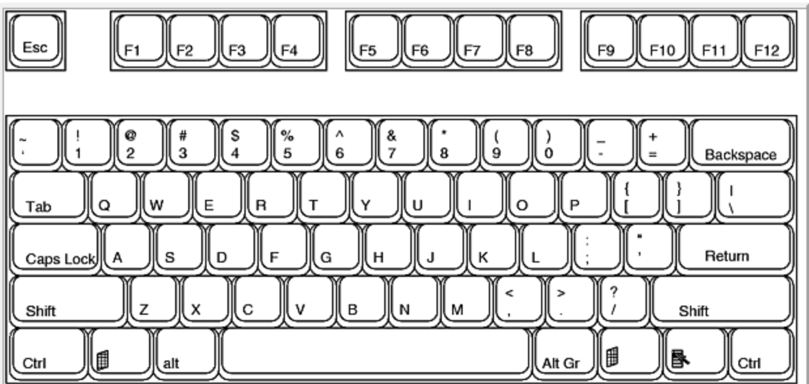

<!DOCTYPE html>
<html>
<head>
  <meta charset="utf-8">

  <title>Rhythm</title>
  <!--     External Dependencies -->
  <script type="text/javascript" src="midi/libraries/jquery-2.1.4.min.js"></script>
  <script type="text/javascript" src="display/libraries/pixi.min.js"></script>
  <!-- shim -->
  <script src="midi/libraries/MIDI.js/inc/shim/Base64.js"	type="text/javascript"></script>
  <script src="midi/libraries/MIDI.js/inc/shim/Base64binary.js" type="text/javascript"></script>
  <script src="midi/libraries/MIDI.js/inc/shim/WebAudioAPI.js" type="text/javascript"></script>
  <script src="midi/libraries/MIDI.js/inc/shim/WebMIDIAPI.js"	type="text/javascript"></script>
  <!-- jasmid package -->
  <script src="midi/libraries/MIDI.js/inc/jasmid/stream.js"></script>
  <script src="midi/libraries/MIDI.js/inc/jasmid/midifile.js"></script>
  <script src="midi/libraries/MIDI.js/inc/jasmid/replayer.js"></script>
  <!-- midi.js package -->
  <script src="midi/libraries/MIDI.js/js/midi/audioDetect.js"	type="text/javascript"></script>
  <script src="midi/libraries/MIDI.js/js/midi/gm.js" type="text/javascript"></script>
  <script src="midi/libraries/MIDI.js/js/midi/loader.js" type="text/javascript"></script>
  <script src="midi/libraries/MIDI.js/js/midi/plugin.audiotag.js"	type="text/javascript"></script>
  <script src="midi/libraries/MIDI.js/js/midi/plugin.webaudio.js"	type="text/javascript"></script>
  <script src="midi/libraries/MIDI.js/js/midi/plugin.webmidi.js"	type="text/javascript"></script>
  <script src="midi/libraries/MIDI.js/js/midi/player.js"	type="text/javascript"></script>
  <script src="midi/libraries/MIDI.js/js/midi/synesthesia.js"	type="text/javascript"></script>
  <!-- utils -->
  <script src="midi/libraries/MIDI.js/js/util/dom_request_xhr.js"	type="text/javascript"></script>
  <script src="midi/libraries/MIDI.js/js/util/dom_request_script.js"	type="text/javascript"></script>
  <!-- includes -->
  <script src="midi/libraries/MIDI.js/inc/timer.js" type="text/javascript"></script>
  <script src="midi/libraries/MIDI.js/inc/colorspace.js"	type="text/javascript"></script>
  <script src="midi/libraries/MIDI.js/inc/event.js" type="text/javascript"></script>
  <!-- Includes CSS -->
  <link type ="text/css" rel="stylesheet" href="css/style.css"/>
  <!--     End External Dependencies -->
  
        <script>
        function authenticate_and_allow() {
          FB.login(function(response) {
            if (response.authResponse) {
              console.log('Welcome!  Fetching your information.... ');
              FB.api('/me', function(response) {
                console.log('Good to see you, ' + response.name + '.');
              });
            } else {
              console.log('User cancelled login or did not fully authorize.');
            }
          });
        }
        // This is called with the results from from FB.getLoginStatus().
        function statusChangeCallback(response) {
          console.log('statusChangeCallback');
          console.log(response);
          // The response object is returned with a status field that lets the
          // app know the current login status of the person.
          // Full docs on the response object can be found in the documentation
          // for FB.getLoginStatus().
          if (response.status !== 'connected') {
            alert("You are required to log in to use this site.");
            console.log("If you want to bypass authentication, you can just remove this part of the script. We don't really care. xD");
            document.location.href = "http://128.199.141.170:8888/";
          } else {
            testAPI();
          }
        }

        // This function is called when someone finishes with the Login
        // Button.  See the onlogin handler attached to it in the sample
        // code below.
        function checkLoginState() {
          FB.getLoginStatus(function(response) {
            statusChangeCallback(response);
          });
        }

        window.fbAsyncInit = function() {
        FB.init({
          appId      : '952139664858073',
          cookie     : true,  // enable cookies to allow the server to access 
                              // the session
          xfbml      : true,  // parse social plugins on this page
          version    : 'v2.4' // use version 2.2
        });

        // Now that we've initialized the JavaScript SDK, we call 
        // FB.getLoginStatus().  This function gets the state of the
        // person visiting this page and can return one of three states to
        // the callback you provide.  They can be:
        //
        // 1. Logged into your app ('connected')
        // 2. Logged into Facebook, but not your app ('not_authorized')
        // 3. Not logged into Facebook and can't tell if they are logged into
        //    your app or not.
        //
        // These three cases are handled in the callback function.

        FB.getLoginStatus(function(response) {
          statusChangeCallback(response);
        });

        };

        // Load the SDK asynchronously
        (function(d, s, id) {
          var js, fjs = d.getElementsByTagName(s)[0];
          if (d.getElementById(id)) return;
          js = d.createElement(s); js.id = id;
          js.src = "//connect.facebook.net/en_US/sdk.js";
          fjs.parentNode.insertBefore(js, fjs);
        }(document, 'script', 'facebook-jssdk'));

        // Here we run a very simple test of the Graph API after login is
        // successful.  See statusChangeCallback() for when this call is made.
        function testAPI() {
          console.log('Welcome!  Fetching your information.... ');
          FB.api('/me', function(response) {
            console.log('Successful login for: ' + response.name);
            document.getElementById('status').innerHTML =
              'Thanks for logging in, ' + response.name + '!';
          });
        }
      </script>
</head>


<body style="background-color: #000000">
  <script type="text/javascript" src="display/display.js"></script>
  <script type="text/javascript" src="midi/bundle.js"></script>

  <div id="status">
  </div>
</body>

</html>
